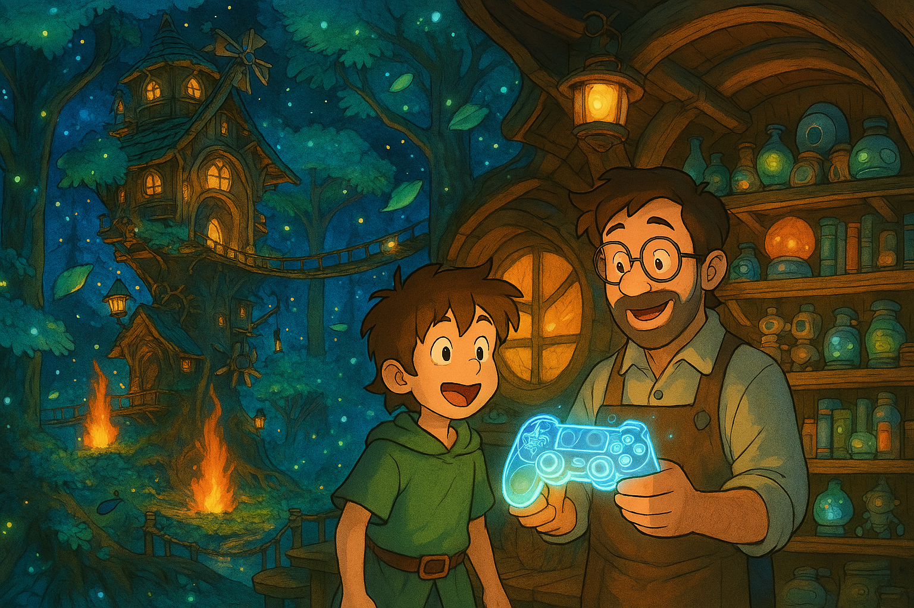
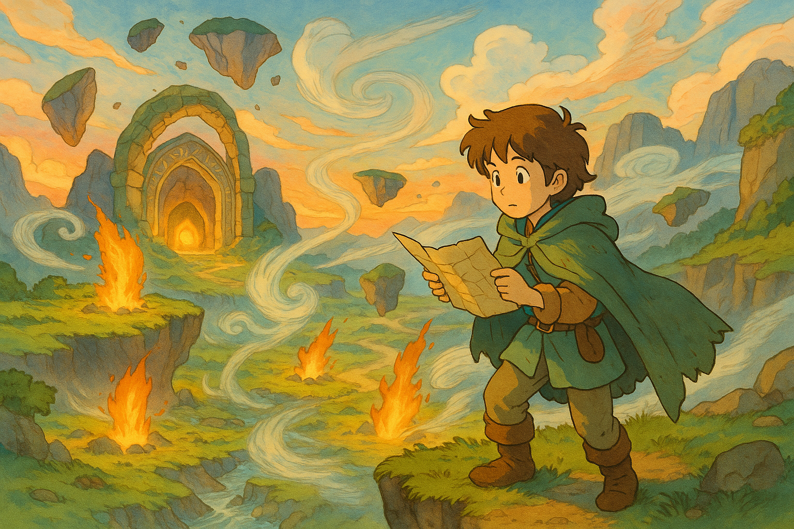
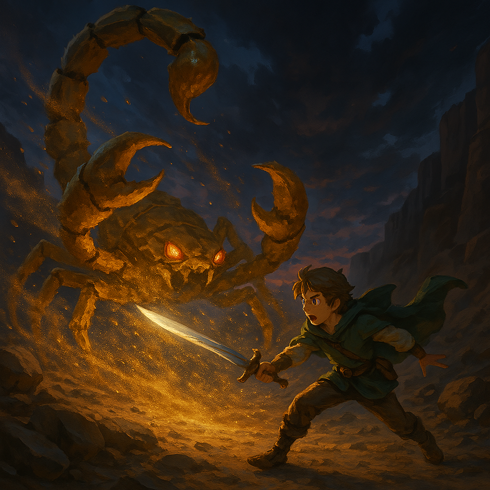
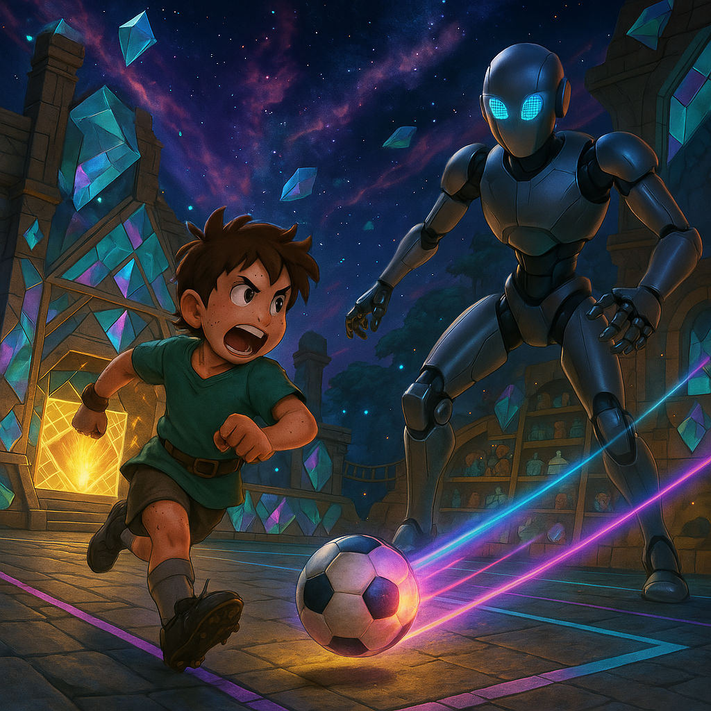

In a mystical place called Elementville, a large treehouse stood tall and sturdy among glowing trees and whispering winds...
Inside, a young, energentic boy named Toby stood excitedly, eyes wide with anticipation. His dad, Ben, was the greatest video game maker in the world.
"This has been my dream since childhood,"
said ben calmly, looking at his latest creation.
Toby loved watching his dad work, and more than anything, he wanted to become a video game maker just like him.
The legend of the Stone
One day, Toby heard whispers of an ancient golden gem hidden deep in the wilds - the Element Stone. But it wasn't just any magical relic. The Element Stone was said to grant any pwer to its holder - not just the power of elements like fire, air, or water, but any power imaginable.
Curious and determined, Toby decided to find it.
The Adventure Begins
He packed his essentials:
- A machine that could turn anything into a delicious meal
- An auto re-fillable bottle of fresh water
- A trusty sword
- A tent and a soft bedroll
As night fell over Elementville, Toby set off under the stars
The Giant Scorpion
Partway through his journey, Toby faced his first great challenge - a giant scorpion guarding a rocky path.
With no time to hesitate, Toby charged with his sword in hand!
The scorpion swung its massive claws, and readied his tail to sting, but Toby was quick.
He dodged, then struck
With one final move, he stabbed the beast, and it vanished in a puff of sand.
The Final Task
At last, Toby reached the final gate where the Element Stone was siad to rest. A mysterious challenge appeared: a 1-on-1 football match against a strange machine opponent.
At first, Toby tried to use fancy tricks - but the machine read every move. Then Toby noticed something: the walls.
He struck the ball against the walls at sharp angles...
Then he ran the other way to meet the ball, then scored.
it worked!
The machine missed completely, and Toby won the match.
The return Home

A golden gate opened, glowing brighter than the sun. Toby stepped through and found himself instantly teleported home.
As he arrived, animals greeted him warmly, birds singing and foxes circling his feet.
In his pocket, the Element Stone glowed faintly - ready to grant any power he could imagine.
Maybe today it would help him build games like his dad.
Maybe tomorrow, it would take him on another quest.
Either way, Toby's journey had only just begun.